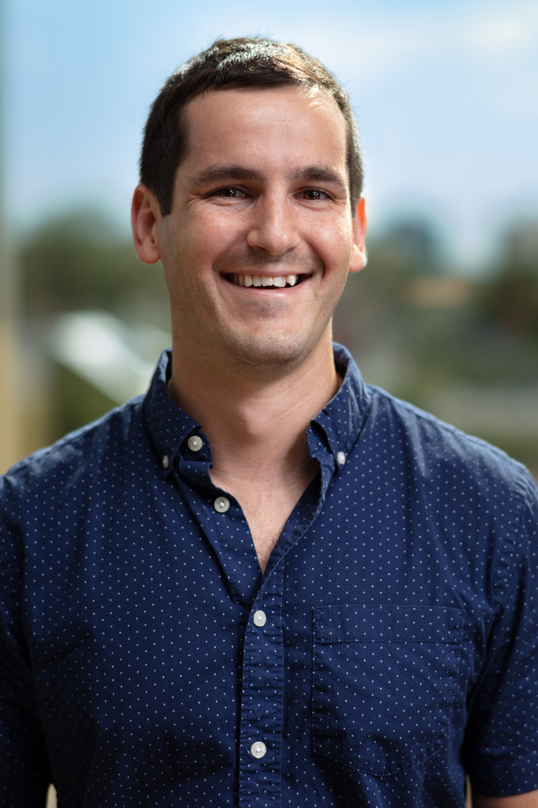
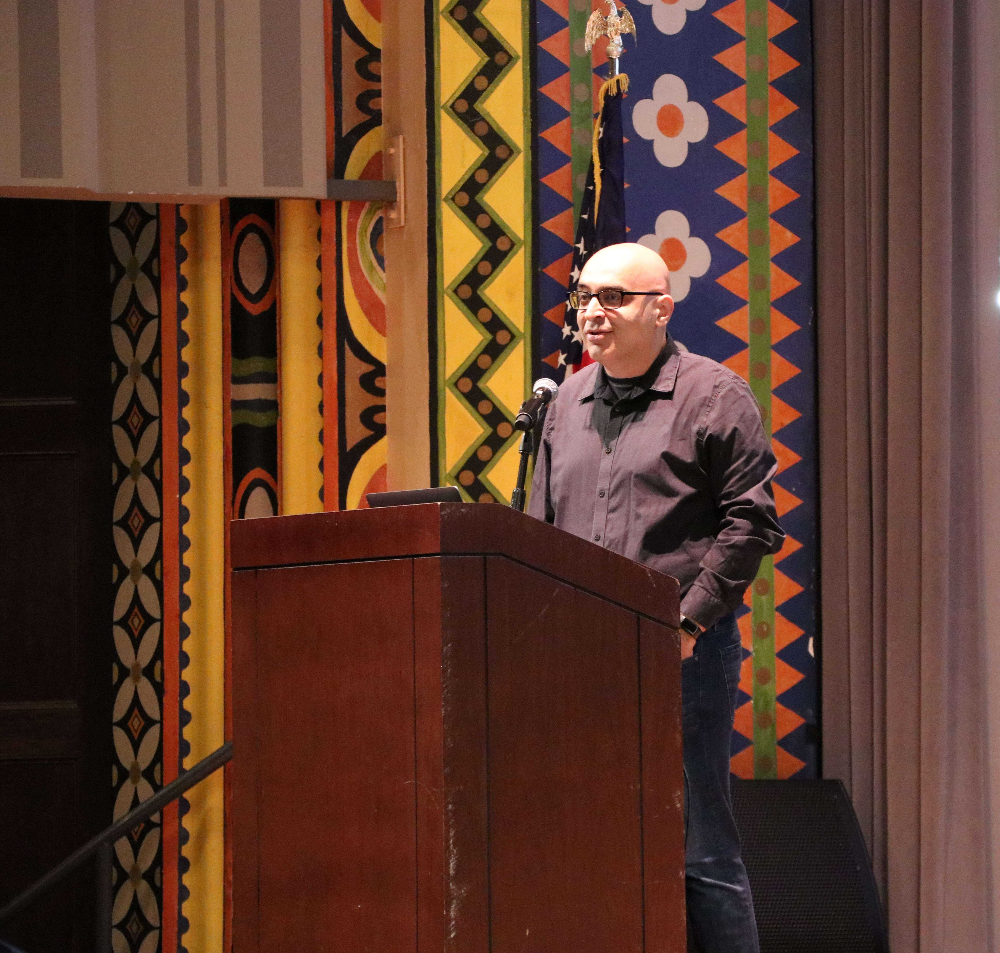
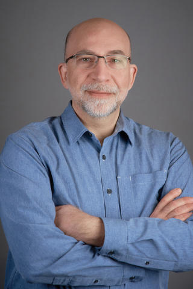
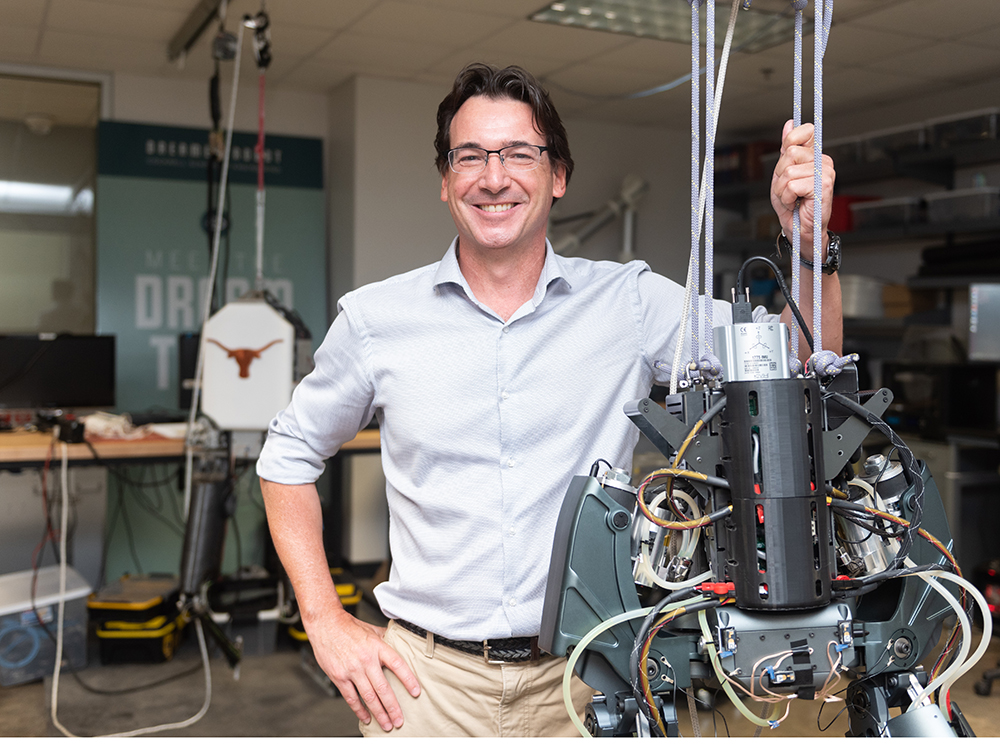

This workshop aims to identify and begin to address the most impactful research questions currently surrounding humanoid robot adoption and the creation of new standards for this field. It brings together researchers, standards developers, manufacturers, and end users to discuss current needs, research gaps, prior and ongoing work, and open questions regarding humanoid robots. The workshop also aims to focus on what standards are needed to fulfill manufacturer and end user needs, and what research needs to be done before those standards can be developed.
The organizers intend that this workshop be an oppourtunity for all participants to discuss the key challenges to humanoid robot implementation, understand current standards directed at or concerning humanoid robots, and engage in finding the solutions to the specific, high-impact research problems the industry faces.
After decades of research in locomotion, design, sensing, and manipulation, recent advances in affordable hardware, computing power, and accessible AI are enabling the transition of humanoid robot technology from cutting edge research to practically implementable robots. An affordable, general purpose robot, able to match human capabilities, has immense potential to reshape the labor market worldwide. In service of this goal, many humanoid robot companies are attempting to bring the technology out of the lab for practical applications in manufacturing, logistics, service, and residential environments, to name only a few. Once price and capability improvements of humanoid robots make broad adoption economically feasible, the remaining questions will be safety, performance metrics and test methods, and certifications. Consensus-based standards are the path forward to addressing these needs. Over just the past year, with an industry report through IEEE and standardization committees in both ISO and ASTM international, progress has been building to adopt a common roadmap of standards development for humanoid robot stability, mobility, and human-robot interaction. However, despite identifying what standards are needed, many open research questions remain that must be addressed in order for these standards to come to fruition. How can stability, manipulation performance, and human-robot-interaction quality be measured? Should humanoid robots be judged against human capability, or other industrial robots? By what metric can two controllers be compared? Answers to these questions and others, along with needed robot capabilities such as safety guarantees for autonomous behaviors and multi-robot, continuous, bimanual cooperation, need to be developed to assist in humanoid robot implementation and use.
| Time | Topic | Speaker |
|---|---|---|
| 14:00 - 14:15 | Introduction | Organizers |
| 14:15 - 14:35 | Title Forthcoming (Standards, ASTM, Test Methods, and IEEE Study Group) | Aaron Prather |
| 14:35 - 14:55 | HRI Safety | Parker Conroy, Vikas Sindhwani |
| 15:00 - 15:30 | Coffee break | |
| 15:30 - 15:45 | "What Makes Humanoids Different?" | Brandon DeHart |
| 15:45 - 16:00 | Oversonic Performance and Safety Standards | Fabio Puglia |
| 16:00 - 16:15 | Title Forthcoming (IHMC: Research, Manufacturer, Test Methods) | Robert Griffen |
| 16:15 - 16:30 | Presentation 6 | TBD |
| 16:30 - 17:00 | Panel Discussion: Bridging the Gap | All Speakers |
|  | |
| |
|
| |
|
|  | |
|
| |
|
|  | |
| |
|
|  | |